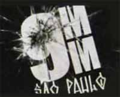

Fiquei um bom tempo semi-desconectado do mundo virtual, mas sempre que podia dava uma lida nos excelentes blogues mantidos por policiais do Brasil inteiro. Então, fiquei até curioso para saber porque ninguém falou ainda da nova minisérie do canal de TV a cabo FOX está produzindo no Brasil. Se alguém abordou esse assunto grita aí!
Trata-se da trama 9 mm São Paulo (nove milímetros), inteiramente gravada no Brasil. Serão 4 episódios, cada um com 1 hora de duração, tratando de casos de investigação policial em São Paulo, que transformados em ficção policial, foram baseados em histórias reais e que tiveram grande atenção da mídia ($$).Nos filmes, serão retratadas as dificuldades enfrentadas pelas forças policiais para elucidar os crimes cometidos por marginais das mais diversas estirpes. O foco será uma equipe de agentes do departamento de homicídios da Polícia Civil de São Paulo. As barreiras de influência política que impedem o trabalho de investigação, a corrupção policial, a precariedade de recursos e abandono pelo poder público, tudo isso parece que será abordado.
O que muito me empolgou também foi saber que a linha de filmagem e roteiro será algo entre as séries americanas Lei e Ordem e The Shield, este último, a meu ver, a melhor e mais realista série policial já filmada.
A estréia deve ser em junho, e as chamadas no canal FOX são freqüentes e animadoras. Parece que o seriado vai ser bom mesmo, e se a audiência for razoável, poderão ser filmados novos capítulos. Torço para que assim seja. Afinal, deu certo com o Tropa de Elite, que mostrava um lado mais operacional. Uma pena que não tenha ainda muito informação sobre esta série, nem mesmo no site oficial da FOX.
Para quem ainda não viu a propaganda ou nem sabia do projeto, fica aí um vídeo de divulgação da série 9mm São Paulo.
[youtube 0ML2xwNffPA]
Link para o vídeo, se não abriu...